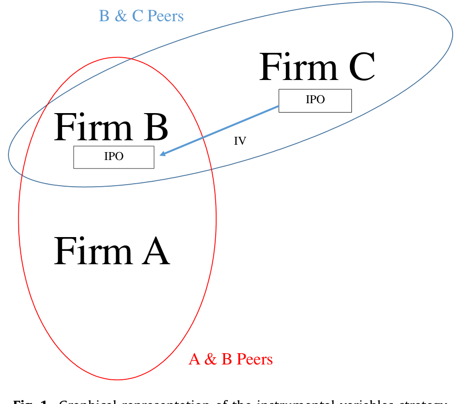
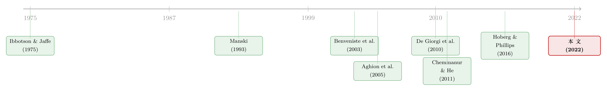

对手刚上市，我要不要也赶紧上？——把「同行效应」算进 IPO 的决策里
本文读的是 Aghamolla & Thakor (2022, Journal of Financial Economics)：一家私人公司在看到自己的「直接竞争对手」刚刚上市之后，自己跑去 IPO 的概率会显著上升——过去 12 个月里有一个直接对手上市，会把它每季度上市的概率从基准的 0.31% 抬到 0.44%（相对提升约 40%）。而且这种「跟风」并不是被同一波热潮卷着走，它集中在竞争更激烈的领域，背后是竞争压力而非信息搭便车。
1 一个看似不该存在的问题
先讲两个华尔街的小故事。
在共享经济还很新鲜的年头，据报道，Uber 在听到风声、得知 Lyft 即将叩开公开市场的大门之后，加快了自己的 IPO 计划。无独有偶，在网络安全行业，Tenable 据说在看到它的近身对手 Zscaler 上市之后，把自己的上市时间表硬生生提前了好几个季度。
这两个故事听上去再自然不过——对手动了，我也得动。可是，如果你把它放到金融学的标准框架里，它其实是个不该存在的现象。在一个无摩擦的资本市场里，一家公司是否上市，应该只取决于它自己上市的成本与收益，跟隔壁那个对手有什么关系呢？上市与否是一个关于自身基本面的决策，对手的选择不该改变你这本账。
可现实偏偏不是这样。于是一个自然的问题浮出水面：一家私人公司的 IPO 倾向，会不会真的被它直接竞争对手的上市决策所影响？ 作者把这种被对手牵动的现象，称为「同行效应（peer effects）」。
听起来好回答，做起来却几乎是死局。
2 难点：你根本「看不见」私人公司
要回答这个问题，你需要的不只是上市公司的数据，而是私人公司的数据——既要看到那些最后上了市的，也要看到那些一直憋着没上的；更要命的是，你还得在这一堆私人公司里，准确地认出谁和谁是「近身肉搏」的对手。
在美国，私人公司的财报和经营决策几乎不公开，这件事本身就难如登天。也正因为如此，过去这条文献大多被逼到了行业层面去做文章，而且基本只能盯着上市公司看（如 Hsu et al., 2010）。「行业」这个尺度太粗了——同属一个行业，未必是真正的对手。
作者的破局之道，是把整个研究锁进一个特殊的行业：生物制药（biopharma）。
为什么是它？因为这个行业有一种别处没有的、极其细粒度的项目级数据：每家公司（无论上市与否）在研发什么药、这些药针对的是哪一种具体疾病，都是可以观测到的。于是作者给「同行」下了一个非常精确的定义：
两家公司，只要它们各有一个药物项目落在同一个治疗适应症类别（therapeutic indication category，比如「类风湿性关节炎」），就互为同行。全样本里这样的疾病类别有 669 个，而大多数公司只在两个或更少的治疗领域里布局。
这个定义有四个妙处。第一，它「顺着项目走」，谁和你抢同一种病的药，谁就是你最该盯着的对手；第二——这一点至关重要——同行关系是因公司而异（firm-specific）的，每家公司有自己独特的对手名单，于是不同公司的同行圈子彼此只部分重叠；第三，随着项目组合变化，对手名单可以随时间动态更新；第四，它让我们第一次能直接研究私人公司之间的相互作用。
这套测度，和 Hoberg and Phillips (2016) 用 10-K 文本相似度刻画产品市场对手的思路是同源的。但 10-K 只有上市公司才填，那套方法基本管不到私人公司；而项目级数据对上市与否一视同仁，这正是本文的优势所在。
3 真正关键的一步：用「部分重叠」破解反射问题
同行圈子「因公司而异、彼此部分重叠」这个特征，看上去只是个数据细节，但它其实是整篇论文识别策略的命门。
研究同行效应，绕不开一座大山——反射问题（reflection problem），由 Manski (1993) 提出。用最朴素的话说：你和你的同行行为相似，到底是因为「他影响了你」（真正的同行效应），还是因为「你们本来就受同一些东西影响」（共同的外生冲击）？这两者在数据里长得一模一样，像照镜子一样分不开。
把它写成那个经典的「线性均值（linear-in-means）」模型就一目了然了：
$$ y_i = \alpha + \beta\, \mathbb{E}[y \mid g] + \gamma\, \mathbb{E}[x \mid g] + \eta\, x_i + \varepsilon_i $$
这里 \(y_i\) 是个体 \(i\) 的行为（要不要 IPO），\(\mathbb{E}[y\mid g]\) 是它所在同行圈子 \(g\) 的平均行为，\(\mathbb{E}[x\mid g]\) 是圈子的平均特征。\(\beta\) 就是我们想要的「内生同行效应」。问题在于：如果每个人的圈子都一样（传统的行业分组），那么 \(\mathbb{E}[y\mid g]\) 和 \(\mathbb{E}[x\mid g]\) 会高度共线，\(\beta\) 根本估不出来。
但本文的圈子不是这样的。因为同行关系因公司而异，A 的圈子和 B 的圈子不重合，这就在数据里制造出足够的变异，让我们可以把「对手 IPO」这一项，从其它同行协变量里剥离出来。这就是为什么作者反复强调「部分重叠」——它不是细节，它是钥匙。
接着，一个更挑剔的读者会追问：就算解决了反射问题，万一是某个没观测到的共同冲击同时推着这一圈公司去上市呢？这仍然不是真正的「对手影响了我」。
作者的回应分两步走。
第一步，用海量固定效应去「吸干」共同冲击。 他们在主回归里塞进了大量随时间变动的固定效应，专门控制「同一疾病大类、同一时期」里所有公司共享的冲击。换句话说，任何能影响一整片相似公司的信息到达或共同震荡，都被这些固定效应吃掉了。结论是：即便如此，那个细粒度的同行效应依然站得住——它有自己独立的解释力。
第二步，也是更漂亮的一步——工具变量。 这正是「部分重叠」的第二次发力。
4 工具变量：拿「对手的对手」当杠杆
IV 的逻辑，作者用一个 A–B–C 的小三角讲得极清楚：
- 公司 A 和公司 B 是直接对手；
- 公司 B 和公司 C 是直接对手；
- 但 A 和 C 不是对手（它们不在相关的治疗领域里交集）。
我们想知道的是 B 的上市对 A 的影响。麻烦在于 B 是否上市本身是内生的。于是作者用 C 的上市决策，作为 B 上市概率的工具变量：C 上市，会推动 B 上市（相关性成立，因为 B、C 是对手）；而 C 的上市决策对 A 的影响，只能借道 B——因为 C 跟 A 八竿子打不着（排除约束成立）。
这就是典型的「peers-of-peers」工具变量思路，源头是 De Giorgi et al. (2010) 在社会互动里玩的「部分重叠同行圈」。图 1 把这个三角关系画得一目了然。

Figure 1: Graphical representation of the instrumental variables strategy
为了把排除约束钉得更死，作者还做了一个更严苛的版本：在选 C 的时候，要求 A 和 C 连更宽口径的 ICD-10 疾病大类（block）都不重叠——也就是说，A 和 C 不仅不是直接对手，连「沾点边」都谈不上。即便在这么苛刻的定义下，IV 结果依然稳健。
5 主要结果：40%、62%，和一个反转
把这一整套识别策略跑下来，核心数字是这样的：
- 过去 12 个月里观察到一个同行 IPO，会把自己每季度上市的概率，从无条件基准的
0.31%抬升到0.44%——相对提升约40%； - 如果直接和「没看到同行 IPO」的公司比，则是从
0.20%升到0.33%，相对提升62%； - 换成年度频率，则是从
1.22%／年 升到2.04%／年。
这些结果在控制了时间与公司固定效应、市场状况、IPO 数量、项目组合的风险与规模之后依然成立，在剔除共同冲击之后也依然成立。
到这里，故事还只讲了一半。真正有意思的，是作者紧接着要回答的那个问题：这股「跟风」，到底是被什么驱动的？
他们在概念框架里给出了两条互相竞争的渠道。
渠道一：竞争（competition channel）。 上市会给新上市的公司带来一堆竞争优势——一大笔几乎没有附加条件的股权资本、媒体曝光、投资者与消费者的注意力、更快推进项目乃至抢先把药推向市场拿到专利与营销独占权。对手一旦上市拿到这些好处，你留在私人状态的边际收益就下降了；为了不被甩开，你只好也加快上市。
渠道二：信息（information channel）。 对手上市时，承销商要做大量「代价高昂的估值信息生产」（Benveniste et al., 2003；Hanley and Hoberg, 2010），这些信息会通过招股书、发行价、抑价等暴露出来。还没上市的同类公司，可以搭便车白嫖这些信息，从而降低自己上市的边际成本。
这两条渠道在「会让你更想上市」这一点上是一致的，怎么把它们分开？作者用了两记漂亮的检验。
第一记，看效应集中在哪。 如果是竞争驱动，那么效应应该在竞争更激烈的治疗领域里更强——结果正是如此。
第二记，也是最关键的反转——切开「研发对手」和「产品市场对手」。 作者把直接对手细分为两类：
- 研发对手（R&D competitor）：在同一治疗领域里有药在研；
- 产品市场对手（product market competitor）：在同一领域已经有一款药获批上市。
结果是：研发对手的 IPO 会显著抬高你的上市倾向，而产品市场对手的 IPO 则没有显著影响。
这个结果太「Aghion」了。Aghion et al. (2005) 那条著名的「竞争—创新倒 U 型」关系预测：当你和对手处在「势均力敌（neck-and-neck）」的状态时，竞争会激励你更拼命；而当你已经远远落后、追赶的鸿沟大到无望时，竞争反而会让你泄气。研发对手还在和你抢同一个尚未尘埃落定的赛道——这是势均力敌，所以你要跟着上市；可一旦对手已经有获批的药、领先的鸿沟太大，你索性掉头去别的领域另起炉灶，上市倾向反而不动。
更妙的是反证：如果真是信息渠道在起作用，那么「跟风者」上市时应该享受到更好的 IPO 结果——更短的申报到完成时间、更低的抑价、更高的募资额。可作者去查这些结果，没有发现跟风者与非跟风者之间有任何显著差异。信息搭便车这条路，在直接对手之间并不显眼。
于是结论收束到了一个核心上：这股 IPO 跟风潮，是竞争压力推着的，而不是信息搭便车搭出来的。
6 把镜头拉远：不止 IPO，而是「融资」
故事还能再往外推一层。对一家私人公司来说，IPO 只是融资的一种方式，它还可以接受风险投资（venture capital, VC），或者干脆被一家更大的公司收购。如果背后真是竞争压力，那么同样的逻辑应该在这些渠道里也成立。
作者确实在 VC、被收购、以及把三者合在一起的「广义融资」上，都找到了同行效应的影子。但更耐人寻味的是一个规模上的细节：
- VC 的同行效应只在大额融资轮里出现——小打小闹的 VC 不足以让对手感到威胁；
- 当对手上市或被收购（拿到大笔资本）时，公司不会转向 VC 这种小钱来应对；
- 而无论对手是通过哪种方式拿到融资，公司最强烈的反应都是自己也去上市，其次是被收购。
把这些拼在一起，画面就清楚了：公司在意的不是对手「做了一个动作」，而是对手「拿到了多少弹药」。为了在军备竞赛里不掉队，它要用一种能让自己也获得同等量级资本的方式去回应——而 IPO，恰恰是弹药最足的那一种。这进一步印证了竞争渠道。
7 文献脉络
把这篇论文放回它所处的坐标系里，会看得更清楚。
最早，IPO 文献关心的是总量的潮起潮落——Ibbotson and Jaffe (1975) 的「热市（hot issue markets）」，讲的是一波又一波的发行浪潮，但那是市场层面的现象。后来，一支文献开始问 IPO 之间是否有信息溢出：Lowry and Schwert (2002)、Benveniste et al. (2003) 都发现后来者能从先行者的发行里学到东西。
与此并行的，是「竞争与 IPO」这条线：Hsu et al. (2010)、Chemmanur and He (2011)、Chod and Lyandres (2011) 一致发现，新的发行会损害同行业既有公司的经营业绩、市场份额和股价——也就是说，上市确实给新上市者带来了竞争优势。Spiegel and Tookes (2020) 还用结构估计把这件事量化了。但这些研究多半停在「行业层面」、盯着「上市公司」。

要把同行效应做扎实，方法论上的两块基石不能少：一是 Manski (1993) 点破的反射问题，二是 De Giorgi et al. (2010) 用「部分重叠同行圈」做工具变量的巧思。而把同行效应引入公司财务决策（分红、股票拆分、资本结构……）的，是 Leary and Roberts (2014)、Kaustia and Rantala (2015)、Grennan (2019) 这一脉。竞争与创新的理论支柱，则来自 Aghion et al. (2005)。
本文（2022）正好坐在这几条线的交汇处：它第一次把同行效应做到了 IPO 倾向上，第一次用项目级数据精确刻画了私人公司之间的对手关系，也第一次区分出研发竞争与产品市场竞争对上市决策的不同含义。
（关于同行效应在公司财务里的另一面——资本结构如何「传染」，可参见《同行不是均匀的一团：把「资本结构会传染」这件事，重新量了一遍》；而把同行关系拆成「强邻、弱邻」并用来预测股票收益的做法，可参见《强邻、弱邻，和你站的位置：被「折叠」起来的同行效应》。）
8 评论与延伸（Q&A + 研究方向）
(a) 几个可能的疑问
Q：所谓「同行效应」，和大家熟知的「IPO 热潮 / 热市」到底有什么区别？
热市是市场或行业层面的现象——一段时间里大家都扎堆上市。本文要剥离的恰恰是它：通过「同一疾病大类、同一时期」的固定效应，把所有共享的潮汐冲击吸干，剩下的才是因公司而异的、点对点的「对手对我」的影响。这是热潮无法解释的那一部分。
Q：用「对手的对手（C）」当工具变量，排除约束真的成立吗？
核心假设是：C 不在 A 的相关治疗领域里，因此 C 的上市只能经由 B 影响 A，而不会直接影响 A。这当然可能被「A 和 C 隐性相似」破坏。作者的防线是把 C 的选取标准收紧到连更宽的 ICD-10 疾病大类都不与 A 重叠，结果依旧稳健——这让排除约束可信度大大提高，但严格说仍是一个无法完全证伪的识别假设。
Q：为什么是生物制药？换个行业还成立吗？
选生物制药是因为它有罕见的、覆盖私人公司的项目级数据，能精确认出对手。代价是外部有效性：药物研发是赢家通吃、专利独占、研发周期极长的特殊行业，竞争渠道在这里格外突出。换到一个产品同质、进入壁垒低的行业，效应未必同样强。
Q：研发对手有效、产品市场对手无效，会不会只是样本里产品市场对手太少、统计功效不足？
有这个可能，但作者给出的不是「没估出来」，而是一个有理论预期方向的零效应——它正好对上 Aghion et al. (2005) 的「鸿沟太大就放弃追赶」。两类对手给出方向相反的经济含义，而非单纯的精度差异，这让这个对比更可信。
Q：信息渠道被否掉，是不是说 IPO 之间根本没有信息溢出？
不是。作者的措辞很克制：信息搭便车在直接对手之间不显眼，这暗示信息效应更可能是在更广的市场或行业层面被共享的，而不是点对点地从一个近身对手流到另一个。这反而和 Lowry-Schwert、Benveniste 那条「市场层面学习」的文献是相容的。
Q：0.31%→0.44% 这个绝对量级是不是太小了，值得当回事吗？
单看每季度的概率确实很低，但这是因为任意一个季度里上市本身就是小概率事件。关键在相对幅度——
40%乃至和未受影响组比的62%，是相当大的行为改变；而且它针对的是「最近 12 个月内出现一个直接对手 IPO」这个相当具体的触发条件。
(b) 几个可能的研究问题与提案
1. 把同样的逻辑搬到公司债 / 信用市场：对手发债会不会催我发债？
【经济故事】IPO 是「抢弹药」，那么债务融资同样是弹药。一家公司看到直接对手刚发了一笔大额债、锁定了长期低成本资金，会不会也赶在信用窗口关上前抢发？这能把「竞争驱动的融资同行效应」从股权推广到信用市场。 【可行性】中。债券市场有 Mergent FISD、TRACE 等高质量数据，发行事件可精确定位；难点在于复刻本文那种「因公司而异、部分重叠」的对手测度——可借用 Hoberg-Phillips 文本相似度（仅限上市公司）或产业链/专利数据来构造，IV 思路可沿用 peers-of-peers。
2. 同行效应会不会渗到对手 IPO 之后的「二级市场流动性」上？
【经济故事】如果一群直接对手在短时间内被「竞争压力」推着扎堆上市，它们的股票在投资者眼里高度可替代，做市商和套利者会把它们当成一篮子来对冲。那么一个对手的 IPO 冲击，可能通过共同持有人或共同做市，外溢到同行已上市股票的流动性上。 【可行性】中高。需要 TRACE/CRSP 级别的成交数据加本文的项目级对手网络；识别上可借「对手 IPO」这一相对外生的事件做事件研究。属于「外资持有人 / 流动性」方向里很自然的延伸。
3. 跟风上市的公司，长期表现更差吗？——「竞争驱动」的代价
【经济故事】如果一家公司上市的主因不是自身准备好了，而是「被对手逼的」，那它可能上得太急、估值与基本面错配，长期回报、研发产出或被并购概率会系统性偏弱。这能检验竞争渠道是否带来过度上市（over-IPO）的扭曲。 【可行性】高。把样本按「是否由对手 IPO 触发」分组，比较其后 3–5 年的运营与股价表现即可，数据本文已具备；难点在于把「被迫」与「恰好准备好」分开，需要更细的工具变量或匹配。
4. 外资 / 跨境对手的 IPO，是否也会触发本土公司上市？
【经济故事】生物制药是全球竞争的行业。一个海外对手在本国或美国上市，可能同样压缩本土私人公司的竞争优势。这能检验竞争渠道是否跨越国界，并把「外资持有人」维度引进来。 【可行性】中。需要跨国的 IPO 与项目级数据（部分可由全球药物研发数据库覆盖），但各国制度差异会引入大量干扰，识别难度上升。
5. 用本文的对手网络，重估「IPO 撤回」与「上市推迟」的同行效应。
【经济故事】对手成功上市会推你上，那对手上市失败 / 撤回会不会反过来吓退你？这是竞争渠道的镜像检验，能更完整地刻画同行如何双向调节你的决策。 【可行性】高。撤回与推迟的数据可从 SEC 申报中提取，与本文框架完全兼容，是一个低成本的自然扩展。
9 我的判断
这篇论文最值得称道的，是它把一个长期被「私人公司不可观测」卡住的问题，用一个聪明的行业选择 + 项目级对手测度撬开了。它的识别不是靠一招鲜，而是层层加固：先用「因公司而异、部分重叠」的同行圈破掉反射问题，再用海量固定效应吸干共同冲击，最后用「对手的对手」做工具变量。而 R&D 对手有效、产品市场对手无效这个对比，把「竞争 vs. 信息」两条渠道干净利落地分了开，并且和 Aghion 的理论严丝合缝——这是全文最漂亮的地方。
要说担忧，主要有三点。其一是外部有效性：生物制药是个竞争极端化、专利独占、周期超长的特殊行业，竞争渠道在这里被放得很大，换个行业结论能走多远，是个真问题。其二是 IV 的排除约束终究无法证伪，尽管 ICD-10 大类的稳健性检验已经把它逼到很可信的位置。其三是「概念框架」停在了口头的成本—收益论证上，没有一个正式的均衡模型——这让「竞争渠道」更像是一个被证据偏爱的故事，而不是被结构推导逼出来的唯一解释。
我接下来最想看到的，是把这套「竞争驱动的融资同行效应」拉到信用市场和跨境场景里去：如果对手发债会催我发债、海外对手上市会逼本土公司上市，那么本文揭示的就不只是 IPO 的一个特例，而是「竞争如何重塑公司融资时点」的一条普遍规律。
参考文献
- Aghion, P., Bloom, N., Blundell, R., Griffith, R., & Howitt, P. (2005). Competition and innovation: an inverted-U relationship. Quarterly Journal of Economics 120(2), 701–728.
- Benveniste, L. M., Busaba, W. Y., & Wilhelm Jr., W. J. (2002). Information externalities and the role of underwriters in primary equity markets. Journal of Financial Intermediation 11(1), 61–86.
- Benveniste, L. M., Ljungqvist, A., Wilhelm, W. J., & Yu, X. (2003). Evidence of information spillovers in the production of investment banking services. Journal of Finance 58(2), 577–608.
- Chemmanur, T. J., & He, J. (2011). IPO waves, product market competition, and the going public decision: theory and evidence. Journal of Financial Economics 101(2), 382–412.
- Chod, J., & Lyandres, E. (2011). Strategic IPOs and product market competition. Journal of Financial Economics 100(1), 45–67.
- De Giorgi, G., Pellizzari, M., & Redaelli, S. (2010). Identification of social interactions through partially overlapping peer groups. American Economic Journal: Applied Economics 2(2), 241–275.
- Grennan, J. (2019). Dividend payments as a response to peer influence. Journal of Financial Economics 131(3), 549–570.
- Hanley, K. W., & Hoberg, G. (2010). The information content of IPO prospectuses. Review of Financial Studies 23(7), 2821–2864.
- Hoberg, G., & Phillips, G. (2016). Text-based network industries and endogenous product differentiation. Journal of Political Economy 124(5), 1423–1465.
- Hsu, H.-C., Reed, A. V., & Rocholl, J. (2010). The new game in town: competitive effects of IPOs. Journal of Finance 65(2), 495–528.
- Ibbotson, R. G., & Jaffe, J. F. (1975). "Hot issue" markets. Journal of Finance 30(4), 1027–1042.
- Kaustia, M., & Rantala, V. (2015). Social learning and corporate peer effects. Journal of Financial Economics 117(3), 653–669.
- Leary, M. T., & Roberts, M. R. (2014). Do peer firms affect corporate financial policy? Journal of Finance 69(1), 139–178.
- Lowry, M., & Schwert, G. W. (2002). IPO market cycles: bubbles or sequential learning? Journal of Finance 57(3), 1171–1200.
- Manski, C. F. (1993). Identification of endogenous social effects: the reflection problem. Review of Economic Studies 60(3), 531–542.
- Spiegel, M., & Tookes, H. (2020). Why does an IPO affect rival firms? Review of Financial Studies 33(7), 3205–3249.